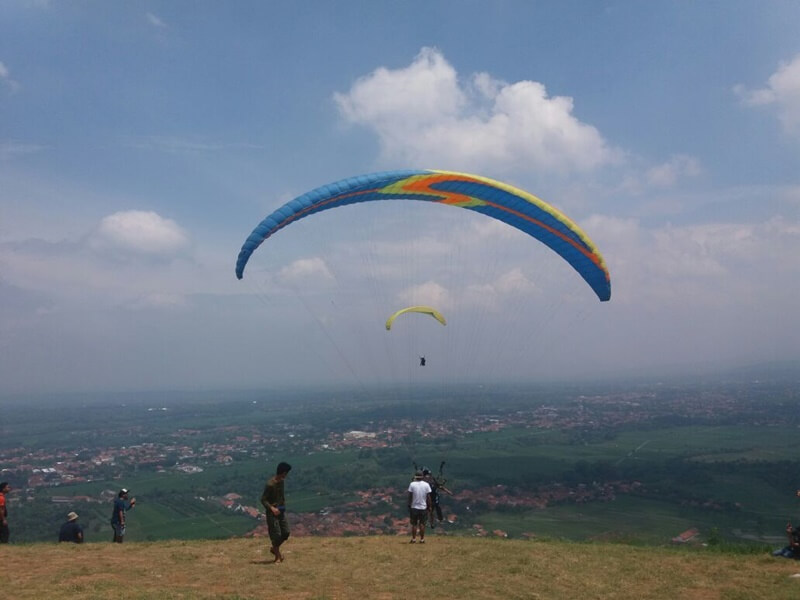

Gunung Lingga

Batu Dua Gunung Lingga menjadi salah satu tempat wisata di Kabupaten Sumedang, Jawa Barat yang wajib kamu datangi. Bicara soal keindahan alam, Sumedang memang memiliki pesonanya tersendiri. Batu Dua Gunung Lingga atau juga sering disebut Batu Dua Sumedang atau Paralayang Batu Dua ini bisa menjadi jawaban ketika kamu merasa stress karena terjebak pada rutinitas. Tahukah kamu dalam ilmu psikologi bahwa setiap orang berhak untuk merasakan kebahagiaannya dalam hidup. Nah salah satu cara untuk mencintai dan membahagiakan diri sendiri ialah dengan berlibur. Dengan panorama yang indah, suasana yang sejuk, serta jauh dari segala problematika adalah keinginanmu saat ini. Tak perlu ragu untuk menentukan Batu Dua Gunung Lingga Sumedang ini menjadi pilihan utama liburanmu akhir pekan ini. Selain untuk menikmati suasana, kamu juga bisa memanfaatkan wahana wisata paralayang. Terutama bagi kamu yang menyukai olahraga penuh tantangan dan memicu adrenalin. Oleh karenanya, berwisata ke Batu Dua Gunung Lingga Sumedang ini menjadi pilihan yang paling tepat untuk kamu kunjungi di akhirpekan ini Bersama kawan, orang terkasih, atau Bersama keluarga tercinta.
Daya Tarik Wisata Batu Dua Gunung Lingga
1. Spot Paralayang Terbaik Di Sumedang
Para pencinta olahraga Paralayang tentu akan sangat senang dengan spot-spot Paralayang terbaik yang ada di Batu Dua Gunung Lingga. Tak heran, tempat ini pernah dijadikan tuan rumah kompetisi Paralayang internasional.
Oleh karena itu, tempat wisata di Sumedang ini disebut juga sebagai Paralayang Batu Dua. So, selain di Bukit Toga kamu juga dapat mencoba wisata ekstrem tersebut di sini.
2. Waduk Jatigede Dan Puncak Damar

Melihat panorama Waduk Jatigede dan Puncak Damar di ketinggian 930 mdp,l objek wisata Batu Dua Gunung Lingga ini sangat cocok untuk menyegarkan mata. Spot ini menjadi daya tarik tersendiri bagi wisatawan Batu Dua Gunung Lingga.